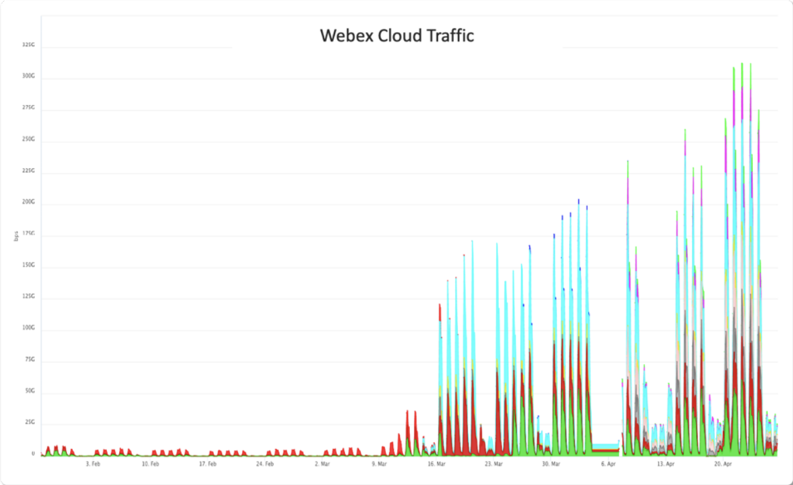
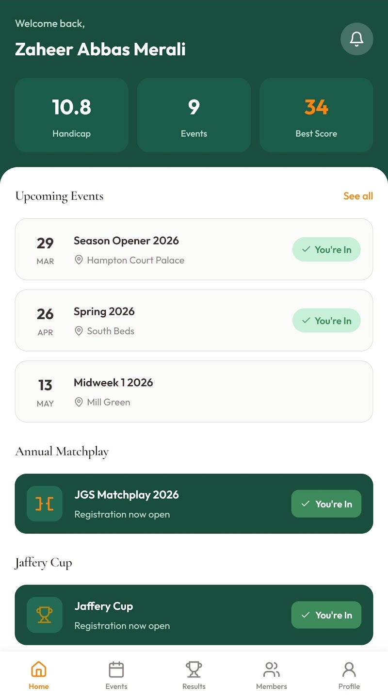
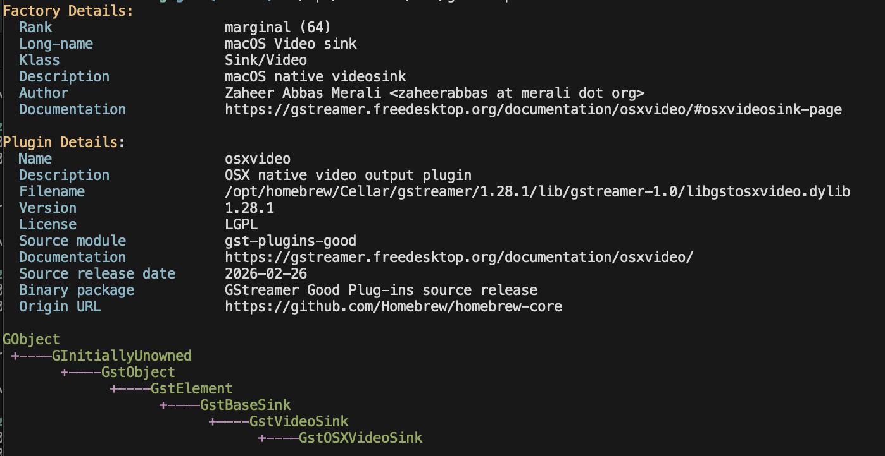
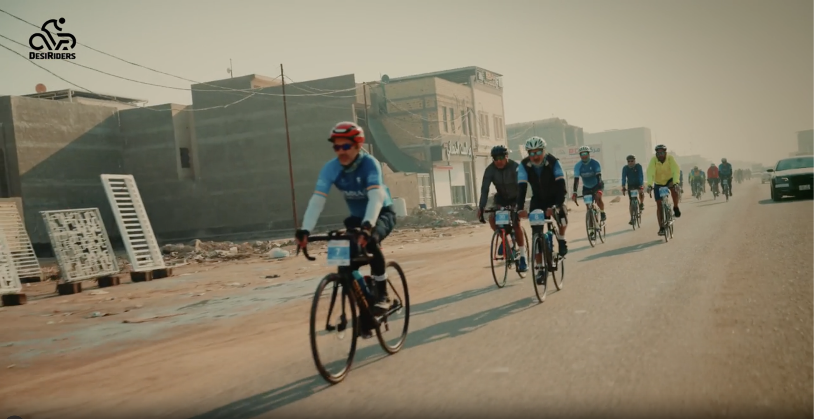
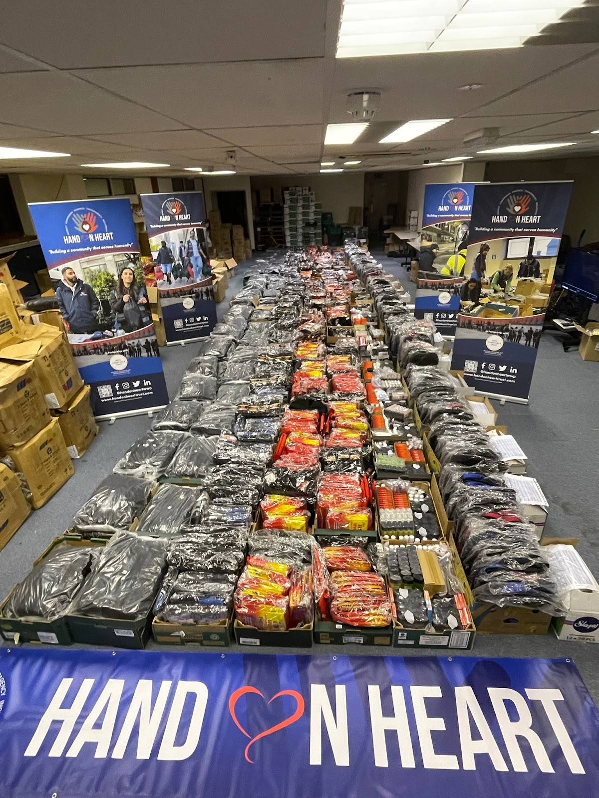

Zaheer
Merali
I scaled Webex when the world went remote overnight. Now I architect the AI infrastructure at Cisco. I build things that hold.
About
I build the systems behind enterprise AI
I architect the AI infrastructure behind Cisco Collaboration. Before that, 15+ years building and scaling the Webex cloud. I've been writing open source since 2001, building high-scale reliable distributed systems since 2006 and more recently shipping AI into production. The real kind, not the demo kind.
I use AI tools daily to plan, architect, code, review, and ship. I've spoken at Nvidia GTC and Cloud Native London about what it actually takes to run models at scale. AWS Solutions Architect certified.
What I do
Where I spend my engineering energy
From architecting AI infrastructure to contributing to open source. Here's what I'm focused on.

Scaling Webex through a pandemic
When Covid hit, the world moved to video calls overnight. I was deep in the Webex infrastructure at Cisco. We scaled the platform by orders of magnitude in weeks, not months. 15+ years of architectural decisions were stress-tested in real time. Cloud-native, Kubernetes, global distribution. It all had to hold. It did.

Shipping real product with AI
I built the Jaffery Golf Society app end-to-end with Claude Code: frontend, backend, infrastructure covering tournament registration, results, statistics, live scoring. Planned, developed, and shipped. AI didn't just help, it was the entire development workflow.

Open source to scratch real itches
I got into GStreamer to build streaming and recording software for the Islamic Centre, and to render simulation videos for education. I've contributed to Kubernetes and CNCF projects to fix bugs I hit running infrastructure at scale. 25 years of solving my own problems in the open. Proud to be an Arctic Code Vault Contributor for many open source projects.
Talks
On stage
Sharing what I've learned about putting AI into production reliably and cost-effectively at scale.
Beyond code
The same discipline, different terrain
Engineering is an endurance sport. The patience, the long game, the willingness to push through. It shows up everywhere.
Golf
Member at Sandy Lodge with a handicap of 10. Captain of the Jaffery Golf Society. I've played courses around the world: Pebble Beach, Torrey Pines, The Belfry, Manele, and the Plantation Course in Hawai'i.

Endurance
Exec at DesiRiders with whom I ride frequent epic cycling journeys, most recently 550km from Basrah to Karbala raising over £300k for charity. I also run and have completed two half marathons: Barcelona and Royal Parks.

Community
Built infrastructure-as-code and AV systems for KSIMC of London. Volunteered for a few charities including Hand on Heart as well as for the USGA at the US Open at Pebble Beach, the US Women's Open at CordeValle.
Get in touch
I'm available for conversations
Advisory on AI infrastructure, building something at scale or speaking invitations. If you're past the demo stage and into the hard part, I'd like to talk.